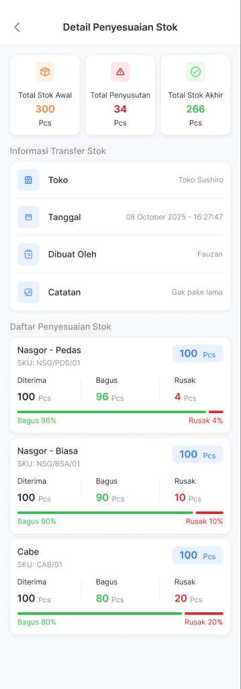
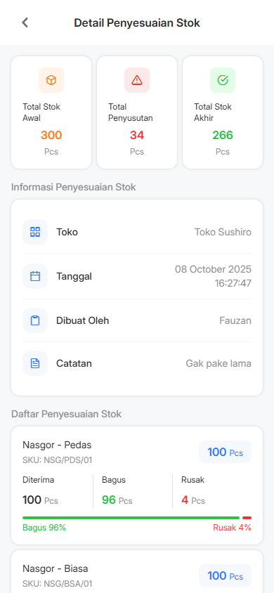
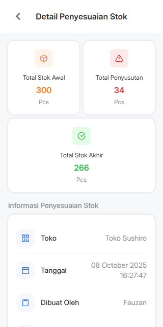
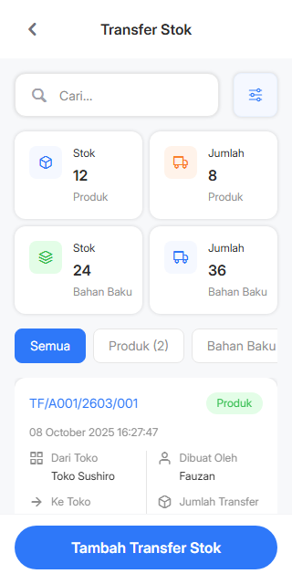
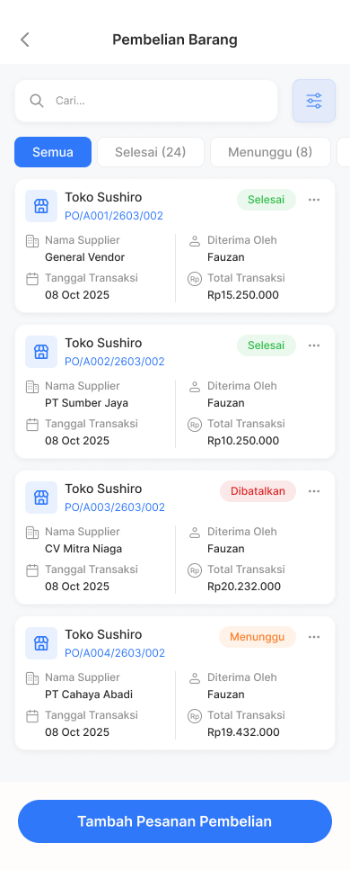
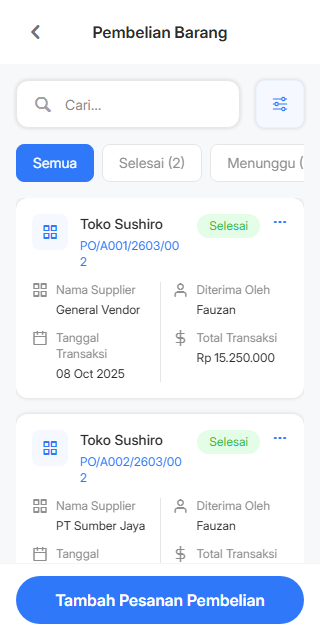

Inventory: bukti koreksi warna
Angka Stok Awal, Penyusutan dan Stok Akhir kini mengikuti warna status. Jumlah serta persentase Rusak tetap merah. Ikon informasi pada daftar Transfer dan Pembelian sekarang abu-abu; link dan tombol tetap biru.
Koreksi warna saja, belum persetujuan seluruh desain. Referensi Figma tersimpan berasal dari frame 1:13605, 1:12059 dan 1:14945; akses baru masih terkena batas Starter. Screenshot referensi diperkecil oleh layanan. Tampilan aplikasi memakai data Inventory existing. Layar daftar diuji pada 320 px, sedangkan acuan 390 px: tata letak, bentuk ikon dan seluruh state masih perlu pemeriksaan terpisah.
Detail Penyesuaian Stok
Referensi tersimpan Figma 1:13605
Aplikasi 390 × 844: 300 / 34 / 266 dan Rusak berwarna
Aplikasi 320 × 640
Daftar Transfer Stok
Referensi tersimpan Figma 1:12059 Aplikasi 320 × 640: ikon informasi abu-abu
Aplikasi 320 × 640: ikon informasi abu-abu
Daftar Pembelian Barang
Referensi tersimpan Figma 1:14945
Aplikasi 320 × 640: ikon informasi abu-abu
44 pemeriksaan browser lulus, runtime/console 0; tujuh pemeriksaan source menjaga perubahan hanya pada prop warna dan prioritas warna. Lint, tipe dan formatting terfokus lulus. QA/QC independen belum menutup temuan.
Handoff dan batas pemeriksaan · Manifest hasil · Temuan visual yang masih terbuka